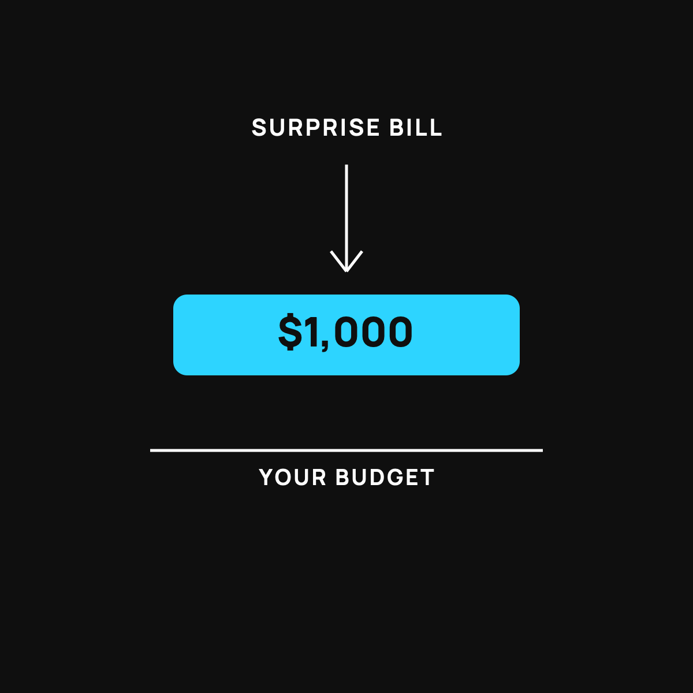

The First $1,000: Your Family's Shock Absorber
The least exciting money move you'll ever make, and the one you'll be most grateful for.
Before you invest a dime, save your first $1,000 in a separate account and leave it alone. It's the shock absorber that keeps a normal surprise, like a car repair or a medical bill, from landing on a credit card. Automate $25 a week, toss in any windfall, and you'll get there inside a year.

Before you invest a dime, before you chase any fancy money move, there's one boring thing that will do more for your peace of mind than all of it: a small pile of cash set aside for when life goes sideways. Call it your first $1,000. It's the spare tire of your finances.
You're not driving on it. Most days you forget it's there. But the day your car breaks down on the shoulder, it's the only thing that matters.
Why a small cushion beats a big plan
Here's what actually happens to most families without one. The water heater dies. The car needs a $600 repair. A medical bill lands. And with no cushion, that surprise goes straight onto a credit card at a brutal interest rate, or it blows up the whole month.
That's the trap. It isn't that people don't earn enough. It's that one normal-sized emergency, the kind that comes for everyone eventually, has nowhere soft to land. So it lands on debt, and the debt sticks around long after the water heater is fixed.
A thousand dollars sitting quietly in a savings account absorbs that hit. The emergency happens, you pay it, and your life keeps moving. No debt, no spiral, no 2 a.m. worry.
Why $1,000 and not more
You'll eventually want a bigger fund, a few months of expenses. That's a later goal. But a huge target is exactly why most people freeze and save nothing. "Six months of expenses" sounds impossible, so the brain files it under someday and moves on.
A thousand bucks is different. It's big enough to catch most everyday emergencies, and small enough that you can actually get there in a few months. It's a finish line you can see. Hit it, and you've already broken the debt cycle for the most common surprises.
How to actually build it
You don't need a budget overhaul. You need a little automatic pressure in the right direction.
- Open a separate savings account and give it a name like "Shock Absorber." Keeping it away from your checking means you won't accidentally spend it on a Tuesday.
- Automate a small weekly transfer. Even $25 a week gets you there inside a year, and you won't feel $25 the way you'd feel one big transfer.
- Add any windfall. A tax refund, a birthday check, a bonus. Toss it in. Windfalls are the fastest way to hit the finish line.
- Then stop and leave it alone. Once you hit $1,000, you're done with this step. Don't touch it unless it's a true emergency, and a sale at the mall is not an emergency.
The takeaway
The first $1,000 isn't an investment. It's a shock absorber, the thing that lets a normal emergency stay a normal emergency instead of turning into debt. Name the account, automate a small amount, feed it any windfall, and let it sit. It's the least exciting money move you'll ever make, and the one you'll be most grateful for.
Questions I get about this
Why $1,000 and not three to six months of expenses?
Because a huge target is exactly why most people freeze and save nothing. A thousand dollars catches most everyday emergencies and is a finish line you can actually see. A bigger fund of a few months' expenses is a good later goal. This is step one.
Where should I keep my emergency fund?
In a separate savings account, away from your checking, with a name like "Shock Absorber." Keeping it out of sight means you won't accidentally spend it on a Tuesday. It's for true emergencies only, and a sale at the mall is not an emergency.
How fast can I save $1,000?
At $25 a week you get there in about 40 weeks. Add a tax refund, a bonus, or a birthday check and you can hit it in a few months. The trick is a small automatic transfer you don't feel, not one big painful move.

Written by David Dewese
Normal guy with a full-time job, wife, and kids. Spent twenty years pursuing music and creative ventures before starting a family. Sharing tips and tricks on how to thrive while living on an artist's income. Not a financial advisor. More about me.
New here?
Normaltown USA is plain-English money and healthcare help for normal people, written by a regular guy with a family of four. No jargon, no hype. Start here, or read the FAQ.